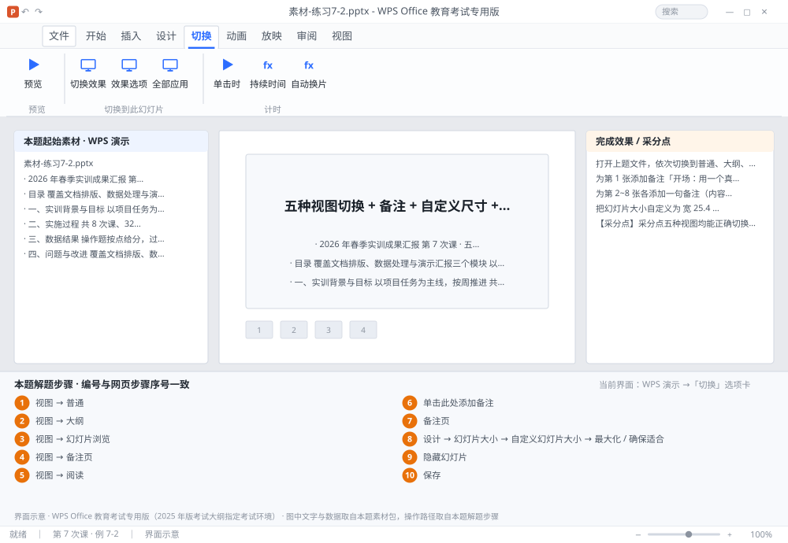

完成比对文档 · 例 7-2
五种视图切换 + 备注 + 自定义尺寸 + 隐藏幻灯片 ｜ 第 7 次课 / WPS 演示 ｜ 网页：实操-演示1.html ｜ 考试环境：WPS Office 教育考试专用版（2025 年版考试大纲指定考试环境）
用途 本页按修订后的题目要求与解题步骤生成，是交卷自查的结果基准：
逐项列出每一步应出现的可复核结果，配合模拟操作截图与解题结果文件使用。
它不是素材包的一部分，不会预置答案动作；起始素材仍从本题素材包下载。
一、本题起始素材包
目录：练习素材/练习7-2-视图与备注/ ｜
下载包：练习素材/下载/练习7-2-视图与备注.zip
二、题目要求
- 打开上题文件，依次切换到普通、大纲、幻灯片浏览、备注页、阅读五种视图，观察差异。
- 为第 1 张添加备注「开场：用一个真实的企业决策失误案例引入」。
- 为第 2~8 张各添加一句备注（内容自拟）。
- 把幻灯片大小自定义为 宽 25.4 厘米、高 19.05 厘米。
- 隐藏第 8 张幻灯片。
- 保存为 学号-姓名-练习7-2.pptx。
三、解题步骤（编号与下方核对表、截图编号一致）
- 普通视图。「视图」→「普通」：左缩略图 + 中间编辑区 + 右侧（或下方）备注区，最常用。
- 大纲视图。「视图」→「大纲」：只显示文字层级，适合快速改标题与调整层级（Tab 降级、Shift+Tab 升级）。
- 幻灯片浏览。「视图」→「幻灯片浏览」：网格排列，适合重排与批量选版式/切换。
- 备注页。「视图」→「备注页」：每页上方是幻灯片、下方是备注，适合准备讲稿。
- 阅读视图。「视图」→「阅读」：窗口内放映，不占全屏。
- 加备注。回普通视图 → 点第 1 张 → 在编辑区下方的「单击此处添加备注」框里输入内容。若看不到备注框，拖动中间编辑区与底部之间的分隔条向上即可。
- 批量加备注。其余 7 张逐页输入；也可在「备注页」视图下一口气写完。
- 改尺寸。「设计」→「幻灯片大小」→「自定义幻灯片大小」→ 宽度 25.4 厘米、高度 19.05 厘米 → 确定 → 弹出「最大化 / 确保适合」时选「确保适合」（内容整体缩放，不会溢出）。
- 隐藏幻灯片。右键第 8 张缩略图 →「隐藏幻灯片」。缩略图编号上会出现斜杠标记，放映时跳过该页。
- 保存。Ctrl+S 另存为 学号-姓名-练习7-2.pptx。
四、完成效果 / 采分点
采分点五种视图均能正确切换 · 8 张幻灯片均有备注 · 页面尺寸为 25.4×19.05 厘米 · 第 8 张已隐藏（编号带斜杠） · 文件保存正确
五、逐项完成核对表
| 步骤 | 关键操作路径 | 应出现的结果（可复核） |
|---|
| 1 | 普通视图 | 「视图」、「普通」 |
| 2 | 大纲视图 | 「视图」、「大纲」 |
| 3 | 幻灯片浏览 | 「视图」、「幻灯片浏览」 |
| 4 | 备注页 | 「视图」、「备注页」 |
| 5 | 阅读视图 | 「视图」、「阅读」 |
| 6 | 加备注 | 1 张、「单击此处添加备注」 |
| 7 | 批量加备注 | 7 张、「备注页」 |
| 8 | 改尺寸 | 「设计」、「幻灯片大小」、「自定义幻灯片大小」、25.4 厘米、19.05 厘米 |
| 9 | 隐藏幻灯片 | 8 张、「隐藏幻灯片」 |
| 10 | 保存 | 学号-姓名-练习7-2.pptx |
六、模拟操作截图

界面示意 · WPS Office 教育考试专用版 · 橙色编号与本题解题步骤序号一致；
图中文字与数据取自本题素材包，功能入口取自本题解题步骤。
核对方法：按网页解题步骤完成并另存自己的成稿后，逐行比对本表第 3 列的
参数、公式、区域、文件名与对象数量；再对照网页「完成效果 / 采分点」检查版式是否一致。